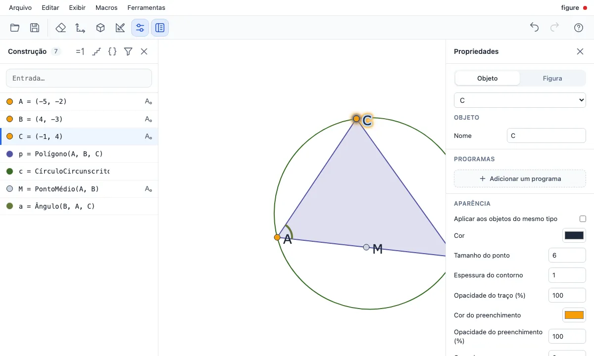
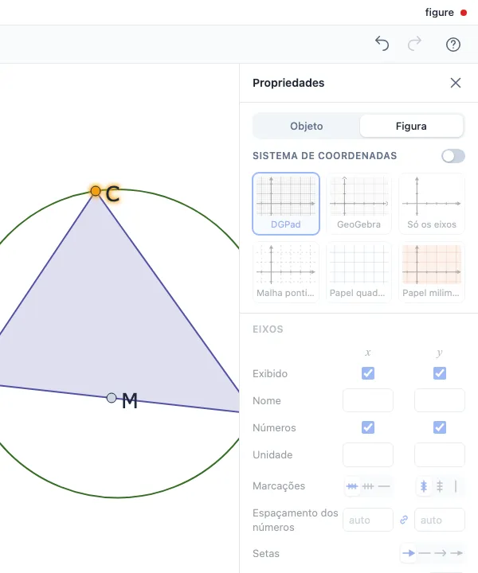

Propriedades e sistema de coordenadas

O painel
- Aberto por ou por da zona contextual; fechado pelo seu ✕, pelo mesmo botão ou por Esc.
- Um clique direito o abre a qualquer momento naquilo que aponta: um objeto, seu nome ou sua linha, toda a seleção se o objeto fizer parte dela, e a aba Figura em um lugar vazio ou sobre um eixo. A ferramenta em uso mantém seus argumentos, e fechar o painel, por exemplo com Esc, traz a paleta de volta se o painel tiver ocupado o lugar dela, com a ferramenta ainda em uso. Única exceção: durante a definição de uma macro, o clique direito não faz nada.
- Ocupa o lugar da paleta de ferramentas: abrir o painel fecha a paleta, e vice-versa.
- Duas abas: Objeto e Figura.
- O objeto a ajustar é escolhido na figura, pela sua linha ou na lista “Escolher um objeto…” (objetos ocultos incluídos). Um clique na figura seleciona em vez de construir; botões e caixas são selecionados sem serem acionados. Uma ferramenta da paleta ou a linha de entrada constroem normalmente, e o objeto criado aparece no painel. Um lado ou um vértice selecionado de um polígono mostra as configurações do polígono.
- As modificações são imediatas e podem ser desfeitas.
- Campos numéricos: arrastar na horizontal ajusta o valor (Shift: dez vezes mais fino), um clique permite digitá-lo. Um arrasto conta como um só passo de desfazer.
- Um botão ↺ ao lado de uma cor a devolve à cor padrão da ferramenta.
A aba “Objeto”
| Seção | Ajustes |
|---|---|
| Objeto | nome; para um comando ou uma expressão, a definição |
| Programas | de um ponto ou de uma expressão: a sua tartaruga e os seus programas de eventos, em blocos |
| Aparência | aplicar aos objetos do mesmo tipo, cor, tamanho do ponto, espessura, contorno, opacidades do traço e do preenchimento, cor do preenchimento, tracejado, camada (ordem de desenho) |
| Exibição | objeto visível, exibir o nome, objeto fixo (polígono), objeto inerte, tamanho do texto, casas decimais do valor (ou não exibi-lo), visível se, largura do campo de entrada |
| Ponto | forma (círculo, quadrado, cruz, losango), posição do nome em graus, rastro, passo horizontal e vertical (deslocamento aos saltos) |
| Segmento | marcação (traços de comprimentos iguais) |
| Ângulo | raio do arco, marca de ângulo reto (esquadro aberto, arco, quadrado, ponto, esquadro) |
| Lugar, lista | número de pontos; espessura dos segmentos |
| Controle deslizante | incremento, comprimento, vertical, cor e tamanho da alça |
| Moldura | de uma imagem: cor, espessura (0: sem moldura), opacidade do traço, tracejado; sua opacidade e sua camada ficam em Aparência |
| Animação | velocidade (0: parada), sentido inverso, na extremidade: recomeçar, vaivém ou parar |
Visível se
Na seção Exibição: o nome de uma expressão, uma fórmula (m == 2) ou nada. O objeto só é visível se ela for verdadeira, e ela
não pode depender do próprio objeto.
A linha de uma caixa nomeia os objetos dos quais ela é a condição: acrescentar um nome liga o objeto à caixa, retirá-lo o torna sempre visível. Excluir a caixa mantém esses objetos, sempre visíveis.
Cores na criação
Um objeto criado recebe a cor do seu tipo: pontos livres ou sobre objeto em laranja, pontos construídos em cinza, segmentos vermelhos, retas azuis, círculos verdes, polígonos preenchidos de anil… Uma figura nova tem fundo branco.
Vários objetos
Numa seleção múltipla, só aparecem os ajustes comuns a todos; um valor que difere de um objeto para outro fica em itálico cinza. Ctrl-clique, Shift-clique ou toque longo (figura ou painel “Construção”) acrescentam ou retiram um objeto.
Objetos inertes
Objeto inerte: o objeto deixa de reagir à passagem do ponteiro, ao clique e ao toque. Já não se arrasta nem se designa na figura: o ponteiro alcança o que está por baixo. Com o painel de propriedades aberto, nenhum objeto é inerte, para que se possa selecioná-lo e desmarcar a caixa.
A aba “Figura”

Um clique num eixo abre esta aba.
| Seção | Ajustes |
|---|---|
| Sistema de coordenadas | exibido ou não; modelos DGPad, GeoGebra, só os eixos, malha pontilhada, papel quadriculado, papel milimetrado (só a aparência, nem zoom nem fundo) |
| Eixos (x e y) | exibido, nome, números, unidade (π: múltiplos de π/2), marcações, espaçamento dos números (vazio: auto; 🔗 liga x e y), setas, cor, tamanho e negrito dos números, estilo DGPad ou GeoGebra, semieixos positivos |
| Malha | exibida ou não, espaçamento das linhas, subdivisões, cor (a dos eixos por padrão), espessura, traço contínuo, pontilhado ou tracejado |
| Zoom e deslocamento | eixo fixo na tela, zoom centrado na origem |
| Figura | fundo; ângulos em graus (padrão) ou radianos; segmentos acima dos polígonos |
Em 3D
| Seção | Ajustes |
|---|---|
| Eixos | triedro exibido, cor, espessura |
| Piso | exibido, cor (↺: azul por cima, marrom por baixo), opacidade, tamanho, espaçamento, cor e espessura das linhas |
| Vista | perspectiva |
Esses ajustes podem ser desfeitos; o zoom, o deslocamento e a rotação da vista não.